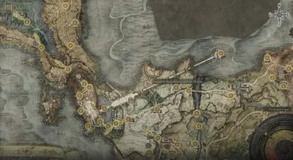
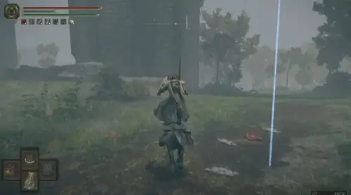
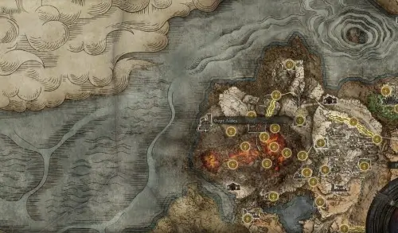
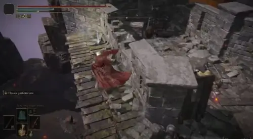

- Рекомендуемый стартовый класс: Духовник или Пророк
- Ключевые параметры: Сила и Вера
- Оружие: Богохульный клинок или Двуручник богоубийцы, Печать Древа Эрд
- Заклинания: Пламя, даруй мне силу, Золотой обет, Благословение Древа Эрд, Ритуал черного
пламени, Пламя Эгхила и Великанское пламя поглотит тебя
- Броня: Чешуйчатый комплект или другие средние и тяжелые доспехи
- Талисманы: Осколок Александра, Амулет с огненным скорпионом, Холщовый талисман стаи и Великий
щит с гербом дракона (легендарный)
- Усилители фляги: Пламенная треснувшая слеза (повышает урон от огня) и Тайная лазурная слеза
(бесконечная мана на 7 секунд)
Прокачка характеристик
Основной упор в этой сборке будет сделан на нанесение урона с помощью огненных заклинаний
и Богохульного клинка, мощь которых, как правило, масштабируется от Силы и Веры, поэтому
необходимо уделить данным параметрам как можно больше внимания.
Разумеется, развивать атрибуты нужно последовательно, не тратя все сразу на эти две характеристики.
К примеру, не следует забывать и про Жизненную силу. В таблице ниже показана прогрессия прокачки всех
параметров.
| Характеристики |
50-й уровень |
100-й уровень |
150-й уровень |
250-й уровень |
| Жизненная сила |
25 |
40 |
50 |
55-60 |
| Интеллект |
15 |
20 |
25 |
40-45 |
| Стойкость |
15 |
20 |
30 |
55-60 |
| Сила |
20 |
30 |
40 |
65 |
| Ловкость |
16 |
20 |
20 |
25 |
| Мудрость |
10 |
10 |
10 |
10 |
| Вера |
20 |
30 |
45 |
80-85 |
| Колдовство |
9 |
9 |
15 |
20 |
Увеличивать Интеллект следует для повышения ОК, чтобы вы смогли кастовать больше заклинаний.
Ловкость необходима для использования нужного оружия и ускорения сотворения молитв. Стойкость
требуется для ношения более тяжелых доспехов, а Колдовство – использования драконьей магии.
Использовать этот билд тоже весьма просто. Для начала примените молитвы Золотой обет, Пламя,
даруй мне силу и Благословение Древа Эрд, а затем выпейте флягу лазурных слез и чудесное снадобье
(последние два этапа можно пропустить, если враг не сильный). После этого атакуйте противника со
средней дистанции, используя Пламя Эгхила, Великанское пламя поглотит тебя или особые способности
оружия.
Если враг подошел слишком близко или вам требуется передышка, то можете скастовать Ритуал черного
пламени, чтобы создать безопасный круг вокруг себя. Можете также перейти на ближний бой, ведь ваше
оружие тоже будет наносить довольно большой урон, плюс, вы будете хорошо защищены своими доспехами,
молитвами и талисманом.
В целом данный билд можно использовать как для PvE, так и для PvP битв. Правда, он может показаться не
очень эффективным при сражении с врагами, обладающими высокой устойчивостью к огню.
Как получить снаряжение
Про получение Богохульного клинка, Печати Древа Эрд, разных сетов брони, кристальных слез и всех молитв
мы рассказали в отдельных руководствах. Отыскать Двуручник богоубийцы можно в Священной башне Звездных
пустошей. Добравшись до этой локации, начните спускаться в ее самую нижнюю часть. Там вы столкнетесь с
Апостолом божественной кожи. Разберитесь с ним, а потом осмотрите сундук для получения оружия.
Если вы хотите получить Чешуйчатый комплект, то вам нужно будет расправиться со Старым рыцарем Истваном.
Контракт на его устранение выдает леди Танит в Вулкановом поместье.


Осколок Александра добывается при выполнении квеста воина-кувшина Александра, а Амулет с огненным
скорпионом можно найти в Форте Лайед, расположенном на территории Вулкана Гельмир (поднимитесь на второй
этаж и пройдите на деревянный выступ с призраком).


.png)